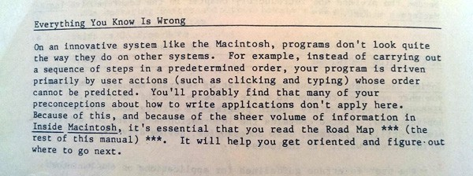

Thoughts on Debugging, Part 1
tags: iOS Mac Leveling\ Up Debugging claimer and link
You can find Part 2 of this series here
Im told Im a pretty good debugger. Friends come to me to help solve software problems. And occasionally it works. But what is a good debugger? What is debugging? Making software run better? Reducing the entropy of the universe? We all know what “Debugging” is because we all do it, but it’s still an interesting question. You could think of debugging in the same way as adding new features to software – you’re just taking this program from one state to another, like it’s a great big state machine.
That being said, I tend to find pondering metaquestions a fun diversion, best with friends sharing a bottle of Glen Breton. But ultimately it can be a fruitless pursuit.
Debugging, to me, is just a skill. It’s an analytical skill, but fundamentally it is a skill that can be learned and developed through practice: you identify problems, analyze the system to figure out what is causing that problem, and then figure out the changes necessary to correct the problem. Finding the cause leads to the solution. The fix might not be practical from a business perspective. If fixing this bug requires overhauling the entire app, it might make better sense to leave it than to pay what it would take to fix.
Debugging can be really difficult. My first professional bug took a solid month to track down. Granted, a lot of that time was getting oriented in the software and learning about the available tools, but a month is a long time in the software biz. Rest assured that it can get easier with practice.
Debugging can be easier for some personality types. It’s a very tactical process. You’Re caught up in details and really don’t need to care about any overarching plan or architecture. You’Re there to find, and perhaps fix, a specific problem as it has manifested in a software system. Luckily Im a very tactical thinker (Im terrible at strategy games). Maybe it’s all those years playing in bands and orchestras. The strategy has already been dictated by the composer and the conductor – my task as a musician is to implement my part of the strategy.
Levels of Pain
I divide bugs into three buckets.
There’s the Five Minute Fix. It’s a problem I’ve seen before and I know what it is. The gimmies. Brent Simmons has a fun post on (The Dramatic Nature of the Easiest Bugs to Fix)[https://inessential.com/2014/05/12/the_dramatic_nature_of_the_easiest_bugs_.html], where to someone unfamiliar with software development, it would seem that the effects of a catastrophic bug are proportional to the difficulty of fixing said bug. Oftentimes it’s the opposite. Many crashes are like this. There is an error that takes down the entire program, losing user data and perhaps corrupting on-disk data stores. But often times with a crasher you can look at a stack trace, see a smoking gun, and realize it’s bad NSLog parameters, an NSNotFound ended up being used as an index into an NSArray, or you’re trying to jump through an uninitialized pointer.
The next level are the one-hour to one-day fixes. These take some investigation, and benefit from some organization – keeping notes and whatnot. You’Re mainly following a trail of broken data to its source.
And finally are the OMG WTF bugs. I have no idea what is going on. Dear Program, This Cannot Be, you’re shaking my faith in all things computational. I both hate and love these bugs. The final solution leads to a great war story to tell, but up until that time, your brain hurts from the unexplainable weirdness of it all.
When you’re first starting out your programming career, everything might be in the omg-wtf category. Even experienced developers, when they change toolkits, are in omg-wtf category. But as you see classes of bugs crop up again (and again and again), bugs move into the easier to solve bins. I fundamentally think were still in the stone knives and bear skins level of software development. Can you imagine a mechanical engineer saying “Sorry the bridge has been delayed again. Gravity keeps changing and the concrete is transmuting to lead after every fourth girder is raised. Hang on while I put on my shaman mask and I can talk about it.” There’s not a step-by-step plan you can follow to guarantee finding and fixing a bug (although the Universal Troubleshooting Process is a step in that direction.)
Don’t Panic! (Breathe)
You’re faced with a bad omg-wtf level bug. Maybe you’re brand new on the job and you’re wanting to make a good impression on your future colleagues. Maybe you’re the chief architect of the project and nothing is working right.
First off, don’t panic. It’s not that bad. Take a breather. You may be pumped on adrenaline. Your reputation may be on the line. The company is losing money every minute the servers are down. This could be a career limiting problem. You’Ve been chewing on the same bug for a month and people think you’re dumb.
That may all be true.
But you have to have a clear, analytical mind. You need to clear the decks of the emotion and concentrate on the problem. For a great many of us, a bug is not immediate life and death. It’s first-world inconvenience. Even though my favorite bug was a major regression in a popular product, and a Very Important Release hinged on it being fixed, but in the big scheme of things the Earth will not explode if you’re unable to drag a graphic into a particular piece of software.
Everything You Know is Wrong

OK. Now that you’ve calmed down, realize that everything you know is wrong. If what you know about the system is actually correct, you wouldnt be tracking down a bug, or at least itd be in the Five Minute Fix category.
Therefore, your knowledge of the system must be incorrect.
If you knew which piece of your knowledge about the system was incorrect, you’d be back in the Five Minute Fix zone. This is one of my key pieces of mental state – it’s how I start a debugging session. Clear the decks of assumptions and start gathering data.
To me, the activity of debugging is moving chunks of the program from the “this is wrong, incorrect, and horribly broken” pile to the “ok, this is how things ought to work” pile. Somewhere along the line, youll be unable to move a piece of code into the “how things should work” pile. Thats a good candidate to find the bug.
(OBTW, the image above is from the original “Phone Book” edition of Inside Macintosh. It’s a phrase that has a long, proud heritage. Thanks to Jeff Barr for that image. I knew Jeff before he had purple hair.)
The Mental Model
A program fundamentally has three parts:
- There are the classes that comprise your code.
- There’s the toolkit, which is a vendor-supplied pile of functionality. This could be Cocoa or CocoaTouch from Apple, or Rails, or .Net.
- There’s also the System, the platform on which your classes and the toolkit are running. It could be OS X, iOS, Windows RT, or Linux. Your program is defined by the interaction between these three layers.
A mental model is the collection of facts about each of these parts, and the understanding of how they should behave. If Im fresh into a system, that mental model may be empty. If Im the principal developer of a system, my model will be more complex.
Question Everything
But, because there’s a bug I don’t know the cause of, there must be something wrong with my mental model. Therefore question everything. Move towards understanding.
Well, maybe don’t question everything (yet). But if you have a bug you havent found, then your mental model must be wrong, somewhere.
So question everything, but within reason. You wouldnt want to reinvent Unix from first principles for every bug. Some parts of my mental model have to be correct to even begin analyzing the world. I have a hierarchy of potential blame, and I concentrate my work at the top of the list, assuming parts underneath are good.
The Hierarcy of Blame
- New code
- Old code
- Library code (third party code, say something like AFNetworking)
- Cocoa (or UIKit, or first-party platform code)
- The compiler / build chain
New code is always suspect – it hasn’t had the battle damage that older code has endured, meaning that there are simple defects that havent been shaken out yet. When a system goes from a working to a non-working state, the new stuff is always the first place to look (and blame).
Old code doesnt get off with a free ticket. There may have been Lurking Software Defects that appear due to new data going through the system. Maybe there’s an unexpected character encoding in a database thats being downloaded from a web service. Maybe there’s a malformed web spider script thats sending corrupted HTTP headers that are killing your header parsing code. (both of those I actually got to track down)
Popular third-party library code is less likely to be the place to start looking for bugs because they tend to be well tested, either explicitly via unit tests, or implicitly by a lot of projects using them. I’ll tend to blame my code first, but I’ll not hesitate to single-step into the library if I think the problem may be there. Non-wildly-popular libraries get lumped into the “my code” bucket because they probably have not been as thoroughly tested or exercised.
Fundamental toolkits, like Cocoa(Touch) generally get a free ride until the end of the debugging process. I’ll always assume that the bug is my fault, and the toolkit is working correctly (or at least working as documented). In general, if you think there’s a bug in something as fundamental as NSArray or NSDictionary, you’d be wrong. I tend to blame higher level objects in toolkits, though. If you think there’s a bug in MPMusicPlayerController, you’d probably be right.
Apple has a large engineering and QA team to work out many issues, plus fairly long pre-release cycles for new OS versions. I am willing to blame the toolkit if evidence starts pointing that direction. You can use the tools in Leveling Up to pull apart the library and see if the problem is there.
(2024 update : totally new rewrite-the-world first-party frameworks like SwiftUI don’t get the assumption that things most likely work. Those live somewhere between old-code and popular third-party library code)
And finally, I never blame the compiler unless there’s no other option. The LLVM team (and Swift team) are awesome, and they produce high-quality work. Sometimes you do find compiler bugs, like in this Mike Ash analysis of a compiler bug, but they tend to be extreme corner cases.
Next time I’ll talk about specifics when tracking down bugs.